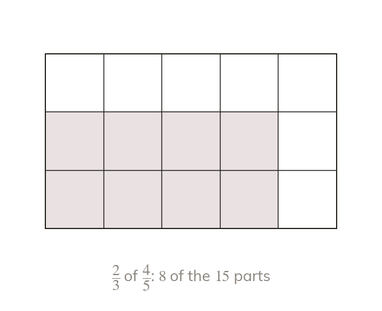

Multiply across
Multiply the numerators together and the denominators together. No common denominator is needed: no parts are being combined.
Multiplying fractions multiplies the numerators together and the denominators together. No common denominator is needed, because no parts are being combined.